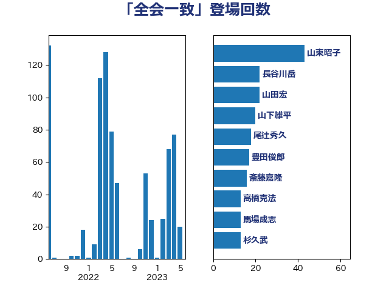

単語「全会一致」

| 山東昭子 | 自由民主党 | 43 回 |
| 長谷川岳 | 自由民主党 | 22 回 |
| 山田宏 | 自由民主党 | 22 回 |
| 山下雄平 | 自由民主党 | 20 回 |
| 尾辻秀久 | 無所属 | 18 回 |
| 豊田俊郎 | 自由民主党 | 17 回 |
| 斎藤嘉隆 | 立憲民主党 | 16 回 |
| 高橋克法 | 自由民主党 | 13 回 |
| 馬場成志 | 自由民主党 | 13 回 |
| 杉久武 | 公明党 | 13 回 |
| 徳永エリ | 立憲民主党 | 13 回 |
| 酒井庸行 | 自由民主党 | 12 回 |
| 古賀友一郎 | 自由民主党 | 12 回 |
| 佐々木さやか | 公明党 | 12 回 |
| 福岡資麿 | 自由民主党 | 11 回 |
| 古川俊治 | 自由民主党 | 11 回 |
| 蓮舫 | 立憲民主党 | 10 回 |
| 上月良祐 | 自由民主党 | 10 回 |
| 松沢成文 | 日本維新の会 | 9 回 |
| 森屋宏 | 自由民主党 | 8 回 |
| 新妻秀規 | 公明党 | 8 回 |
| 斉藤鉄夫 | 公明党 | 8 回 |
| 井上哲士 | 日本共産党 | 8 回 |
| 平木大作 | 公明党 | 7 回 |
| 平口洋 | 自由民主党 | 7 回 |
| 山下芳生 | 日本共産党 | 7 回 |
| 阿達雅志 | 自由民主党 | 6 回 |
| 野村哲郎 | 自由民主党 | 6 回 |
| 橋本岳 | 自由民主党 | 6 回 |
| 青木一彦 | 自由民主党 | 5 回 |
| 長浜博行 | 無所属 | 5 回 |
| 長峯誠 | 自由民主党 | 5 回 |
| 笠井亮 | 日本共産党 | 5 回 |
| 石井準一 | 自由民主党 | 5 回 |
| 後藤茂之 | 自由民主党 | 5 回 |
| 吉川沙織 | 立憲民主党 | 5 回 |
| 仁比聡平 | 日本共産党 | 5 回 |
| 中根一幸 | 自由民主党 | 5 回 |
| 高良鉄美 | 無所属 | 4 回 |
| 高市早苗 | 自由民主党 | 4 回 |
| 鈴木宗男 | 日本維新の会 | 4 回 |
| 西銘恒三郎 | 自由民主党 | 4 回 |
| 舟山康江 | 国民民主党 | 4 回 |
| 自見はなこ | 自由民主党 | 4 回 |
| 河野義博 | 公明党 | 4 回 |
| 川田龍平 | 立憲民主党 | 4 回 |
| 岸田文雄 | 自由民主党 | 4 回 |
| 小沼巧 | 立憲民主党 | 4 回 |
| 宮本徹 | 日本共産党 | 4 回 |
| 北側一雄 | 公明党 | 4 回 |
| 関芳弘 | 自由民主党 | 3 回 |
| 足立康史 | 日本維新の会 | 3 回 |
| 西村康稔 | 自由民主党 | 3 回 |
| 笹川博義 | 自由民主党 | 3 回 |
| 神津たけし | 立憲民主党 | 3 回 |
| 矢倉克夫 | 公明党 | 3 回 |
| 池田佳隆 | 自由民主党 | 3 回 |
| 松下新平 | 自由民主党 | 3 回 |
| 末松信介 | 自由民主党 | 3 回 |
| 小里泰弘 | 自由民主党 | 3 回 |
| 宮本岳志 | 日本共産党 | 3 回 |
| 城内実 | 自由民主党 | 3 回 |
| 伊藤岳 | 日本共産党 | 3 回 |
| 伊藤孝恵 | 国民民主党 | 3 回 |
| 上野賢一郎 | 自由民主党 | 3 回 |
| 三ッ林裕巳 | 自由民主党 | 3 回 |
| 鬼木誠 | 立憲民主党 | 2 回 |
| 高鳥修一 | 自由民主党 | 2 回 |
| 金子俊平 | 自由民主党 | 2 回 |
| 葉梨康弘 | 自由民主党 | 2 回 |
| 芳賀道也 | 国民民主党 | 2 回 |
| 義家弘介 | 自由民主党 | 2 回 |
| 紙智子 | 日本共産党 | 2 回 |
| 穀田恵二 | 日本共産党 | 2 回 |
| 福島みずほ | 社会民主党 | 2 回 |
| 石井浩郎 | 自由民主党 | 2 回 |
| 田村智子 | 日本共産党 | 2 回 |
| 牧義夫 | 立憲民主党 | 2 回 |
| 浮島智子 | 公明党 | 2 回 |
| 松野博一 | 自由民主党 | 2 回 |
| 松村祥史 | 自由民主党 | 2 回 |
| 木原誠二 | 自由民主党 | 2 回 |
| 有村治子 | 自由民主党 | 2 回 |
| 新藤義孝 | 自由民主党 | 2 回 |
| 山田勝彦 | 立憲民主党 | 2 回 |
| 山岡達丸 | 立憲民主党 | 2 回 |
| 小池晃 | 日本共産党 | 2 回 |
| 小山展弘 | 立憲民主党 | 2 回 |
| 塚田一郎 | 自由民主党 | 2 回 |
| 古川禎久 | 自由民主党 | 2 回 |
| 井坂信彦 | 立憲民主党 | 2 回 |
| 上川陽子 | 自由民主党 | 2 回 |
| 黄川田仁志 | 自由民主党 | 1 回 |
| 高野光二郎 | 自由民主党 | 1 回 |
| 馬場伸幸 | 日本維新の会 | 1 回 |
| 青木愛 | 立憲民主党 | 1 回 |
| 阿部知子 | 立憲民主党 | 1 回 |
| 鎌田さゆり | 立憲民主党 | 1 回 |
| 鈴木馨祐 | 自由民主党 | 1 回 |
| 野間健 | 立憲民主党 | 1 回 |
| 道下大樹 | 立憲民主党 | 1 回 |
| 進藤金日子 | 自由民主党 | 1 回 |
| 辻元清美 | 立憲民主党 | 1 回 |
| 赤羽一嘉 | 公明党 | 1 回 |
| 谷合正明 | 公明党 | 1 回 |
| 角田秀穂 | 公明党 | 1 回 |
| 西田実仁 | 公明党 | 1 回 |
| 西村智奈美 | 立憲民主党 | 1 回 |
| 西岡秀子 | 国民民主党 | 1 回 |
| 舩後靖彦 | れいわ新選組 | 1 回 |
| 羽田次郎 | 立憲民主党 | 1 回 |
| 篠原豪 | 立憲民主党 | 1 回 |
| 稲田朋美 | 自由民主党 | 1 回 |
| 石田真敏 | 自由民主党 | 1 回 |
| 石原宏高 | 自由民主党 | 1 回 |
| 石井正弘 | 自由民主党 | 1 回 |
| 田島麻衣子 | 立憲民主党 | 1 回 |
| 牧野たかお | 自由民主党 | 1 回 |
| 牧山ひろえ | 立憲民主党 | 1 回 |
| 浜田靖一 | 自由民主党 | 1 回 |
| 津島淳 | 自由民主党 | 1 回 |
| 沢田良 | 日本維新の会 | 1 回 |
| 武井俊輔 | 自由民主党 | 1 回 |
| 枝野幸男 | 立憲民主党 | 1 回 |
| 松島みどり | 自由民主党 | 1 回 |
| 木原稔 | 自由民主党 | 1 回 |
| 新垣邦男 | 立憲民主党 | 1 回 |
| 岸真紀子 | 立憲民主党 | 1 回 |
| 岩渕友 | 日本共産党 | 1 回 |
| 山添拓 | 日本共産党 | 1 回 |
| 山本太郎 | れいわ新選組 | 1 回 |
| 山本剛正 | 日本維新の会 | 1 回 |
| 山口壯 | 自由民主党 | 1 回 |
| 小西洋之 | 立憲民主党 | 1 回 |
| 小田原潔 | 自由民主党 | 1 回 |
| 小泉進次郎 | 自由民主党 | 1 回 |
| 小宮山泰子 | 立憲民主党 | 1 回 |
| 寺田静 | 無所属 | 1 回 |
| 宮崎勝 | 公明党 | 1 回 |
| 宮内秀樹 | 自由民主党 | 1 回 |
| 大西英男 | 自由民主党 | 1 回 |
| 原口一博 | 立憲民主党 | 1 回 |
| 勝俣孝明 | 自由民主党 | 1 回 |
| 加藤勝信 | 自由民主党 | 1 回 |
| 倉林明子 | 日本共産党 | 1 回 |
| 伊藤忠彦 | 自由民主党 | 1 回 |
| 伊波洋一 | 無所属 | 1 回 |
| 串田誠一 | 日本維新の会 | 1 回 |
| 上野通子 | 自由民主党 | 1 回 |
| 上田清司 | 国民民主党 | 1 回 |
| 三木圭恵 | 日本維新の会 | 1 回 |
| あかま二郎 | 自由民主党 | 1 回 |